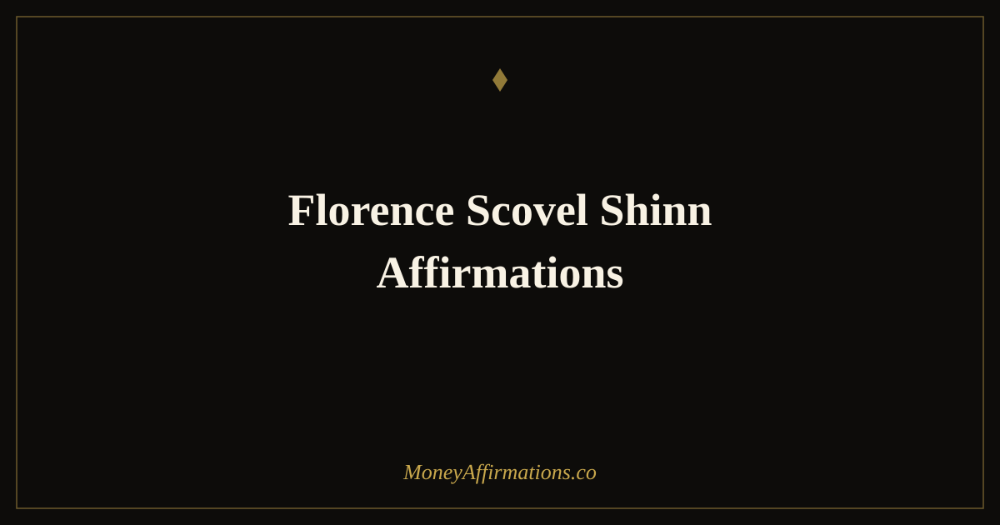

Florence Scovel Shinn Affirmations: 25 Statements for Prosperity

Florence Scovel Shinn wrote about money and prosperity a century ago, and her central claim still holds: the words you habitually speak about money become the financial reality you inhabit. Long before psychology documented the relationship between self-talk and behaviour, Shinn was teaching that the spoken word — said with conviction and aligned with a clear intention — reshapes what a person expects, notices, and ultimately receives. Her work endures not because it is mystical, but because it is accurate.
These 25 affirmations are inspired by Shinn's tradition: confident, declarative, built on the premise that prosperity is not something you chase but something you align with. They are suited to anyone who wants affirmations with more settled authority than tentative hope — statements that speak from arrival rather than from aspiration. If you have tried softer affirmations and found them too easy to dismiss, Shinn's style may be exactly what is needed.
What are Florence Scovel Shinn affirmations?
Florence Scovel Shinn affirmations draw on the New Thought tradition Shinn developed in early twentieth-century New York. Her approach centred on what she called "the game of life" — the idea that there are laws governing what we attract and experience, and that understanding and working with those laws is both a spiritual and a practical act. For prosperity specifically, she taught that supply is unlimited and that the only barrier between a person and abundance is a belief in limitation.
What distinguishes these affirmations from standard money affirmations is their tone of settled certainty. Shinn did not write in the language of hope or effort — she wrote in the language of law and rightful claim. Her affirmations feel different when spoken aloud: more grounded, more absolute. This tone activates a different psychological response — one closer to conviction than aspiration — and for many people produces a more immediate shift in how they carry themselves in financial situations. The manifestation affirmations collection offers further depth in this tradition.
25 Florence Scovel Shinn affirmations
- My supply is inexhaustible and divine order governs my finances now.
- I am under grace and all my financial needs are met in perfect ways.
- Prosperity is my divine right and I claim it now with gratitude.
- The right opportunities, the right people, and the right money come to me now.
- I trust the process of life to bring me everything I need at exactly the right time.
- My finances are in divine order and unexpected doors of abundance open for me.
- I release all fear about money and rest in the certainty that I am always provided for.
- What is rightfully mine cannot be withheld from me, and it comes to me now.
- I speak only words of abundance, knowing my words become my world.
- The right income, the right opportunity, and the right outcome are established for me now.
- I am guided clearly toward every financial decision that serves my highest good.
- Abundance flows to me through seen and unseen channels, freely and generously.
- I release the need to know how wealth comes and trust that it does come.
- Every door I knock on opens for me, and every need I have is already met.
- I am in the right place at the right time to receive my financial good.
- My income is constantly increasing and my prosperity is constantly expanding.
- I give freely and receive abundantly, knowing there is always enough for all.
- All financial fear is dissolved and replaced with faith in my own abundant supply.
- I now receive my good with open hands and a grateful heart.
- Prosperity is not earned through struggle — it is claimed through right thinking.
- I move through every financial challenge knowing that a perfect outcome is already established.
- My words are aligned with abundance, my thoughts are aligned with prosperity.
- I am a channel for financial good and it flows through me and to me without obstruction.
- The universe is on my side in all financial matters, and I act from that knowledge.
- I live in the expectancy of good, and good continually finds me.
How to use these affirmations
Shinn's method was oral — she placed enormous emphasis on speaking affirmations aloud rather than reading them silently. This is worth taking seriously. The physical act of speaking creates an experience of claim and commitment that reading alone does not. Choose three to five affirmations from this list and say them standing upright, in a clear voice, as if you are making a statement of fact. The first few times may feel dramatic. That is the point — the slight discomfort of bold declarative speech is evidence that the belief is being stretched.
A particularly effective approach from Shinn's tradition is what she called "calling forth" — saying an affirmation at the precise moment you feel financial fear or doubt. When worry about money arises, instead of feeding it with anxious thought, respond aloud with a statement of prosperity: "My supply is inexhaustible and I am always provided for." This does not deny the concern; it refuses to give it authority. Over repeated practice, the reflex to respond to financial fear with an abundance statement rewires the default mental response to money stress. Pair this practice with the law of attraction affirmations for money for a complementary perspective.
The spoken word and financial belief: why Shinn's method still works
When Florence Scovel Shinn argued that the spoken word creates reality, she was describing something that modern language and cognition research has since explored in detail. The field of linguistic relativity — the study of how language shapes thought — has documented that the words we use to describe our experience do not merely reflect that experience: they actively shape how we perceive and navigate it. When you habitually speak about money in the language of scarcity ("I can't afford it," "money is tight," "I always struggle financially"), you are not reporting neutral fact — you are training your perceptual and motivational systems to confirm exactly that story.
Shinn's practice of deliberate, repeated, aloud affirmation works through several mechanisms that align with what we now understand about the brain. First, the act of speaking activates motor and auditory cortex in addition to language regions, creating a richer neural encoding of the stated belief. Second, saying something aloud creates a mild sense of social accountability — even when alone — that increases the brain's commitment to the statement. Third, the confident declarative tone that Shinn recommended — "I am always provided for" rather than "I hope I will be provided for" — activates different neural pathways associated with agency and expectancy rather than uncertainty. Over time, the language of prosperity becomes the internal vocabulary through which financial experience is filtered, noticed, and acted upon.
Tips to make them work faster
- Always say them aloud. Shinn's method was explicitly oral. The physical experience of speaking these statements in a confident voice produces a different result than reading them.
- Use them as a counter to financial fear. When worry about money arises, respond immediately with one of these affirmations. Train the reflex of abundance to interrupt the reflex of scarcity.
- Choose the most uncomfortable one. Shinn taught that the affirmation that feels most implausible is the one doing the most important work. Start there.
- Repeat in threes. Shinn often suggested repeating an affirmation three times in succession to deepen its impression. Try this with any statement that feels particularly relevant.
- Speak with the tone of settled fact, not wishful hope. The specific quality of conviction in Shinn's method is what distinguishes it. Practise the tone until the words carry the weight of something you genuinely know to be true.
Frequently Asked Questions
Who was Florence Scovel Shinn and why do her affirmations still resonate today?
Florence Scovel Shinn (1871–1940) was a New York-based author and spiritual teacher who published "The Game of Life and How to Play It" in 1925. She taught that life operates according to spiritual laws and that the spoken word, aligned with belief, shapes outer reality. Her work resonates today because its core insight — that what we habitually say and believe about money determines our financial reality — is consistent with what modern psychology now understands about self-efficacy, expectancy, and cognitive framing.
Do Shinn's affirmations require religious belief to be effective?
No. While Shinn's original writing used spiritual and religious language, the underlying mechanism she described — that habitual thought and speech patterns shape behaviour and therefore outcomes — is a psychological principle. You can use these affirmations effectively whether you interpret "divine order" as spiritual reality, as the natural unfolding of aligned effort and attention, or simply as a metaphor for intentional living. The results come from the practice, not from any particular theological framework.
How are Shinn's affirmations different from modern money affirmations?
Shinn's affirmations tend to be more declarative and confident in tone — they speak with a certainty that reflects her belief in spiritual law rather than gradual self-improvement. Modern affirmations often soften this into process-language ("I am becoming wealthy"). Both approaches work, but Shinn's more absolute declarations can be particularly effective for people who respond to a sense of settled conviction rather than incremental progress. Try both and notice which creates more internal shift.
For a broader library of statements in the manifestation tradition, explore the full manifestation affirmations collection and find the language that most powerfully aligns with the prosperous life you are creating.